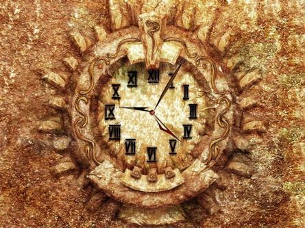

Medieval Inventions - the clock
The earliest medieval European clockmakers were Christian monks. Medieval religious institutions required clocks because they regulated daily prayer- and work-schedules strictly, using various types of time-telling and recording devices, such as water clocks, sundials and marked candles, probably in combination. When mechanical clocks came into use, they were often wound at least twice a day to ensure accuracy. Monasteries broadcast important times and durations with bells, rung either by hand or by a mechanical device, such as by a falling weight or by rotating beater.
Although the mortuary inscription of Pacificus, archdeacon of Verona, records that he constructed a night clock (horologium nocturnum) as early as 850, his clock has been identified as being an observation tube used to locate stars with an accompanying book of astronomical observations, rather than a mechanical or water clock, an interpretation supported by illustrations from medieval manuscripts.
The religious necessities and technical skill of the medieval monks were crucial factors in the development of clocks, as the historian Thomas Woods writes. The monks also counted skillful clock-makers among them. The first recorded clock was built by the future Pope Sylvester II for the German town of Magdeburg, around the year 996. Much more sophisticated clocks were built by later monks.

The appearance of clocks in writings of the 11th century implies that they were well known in Europe in that period. In the early 14th-century, theFlorentine poet Dante Alighieri referred to a clock in his Paradiso; the first known literary reference to a clock that struck the hours. Giovanni da Dondi, Professor of Astronomy at Padua, presented the earliest detailed description of clockwork in his 1364 treatise Il Tractatus Astrarii. This has inspired several modern replicas, including some in London's Science Museum and the Smithsonian Institution. Other notable examples from this period were built in Milan (1335), Strasbourg (1354), Lund (1380), Rouen (1389), and Prague (1462).
Salisbury cathedral clock, dating from about 1386, is one of the oldest working clocks in the world, and may be the oldest. It still has most of its original parts, although its original verge and foliot timekeeping mechanism is lost, having been converted to a pendulum, which was replaced by a replica verge in 1956. It has no dial, as its purpose was to strike a bell at precise times. The wheels and gears are mounted in an open, box-like iron frame, measuring about 1.2 metres (3.9 ft) square. The framework is held together with metal dowels and pegs. Two large stones, hanging from pulleys, supply the power. As the weights fall, ropes unwind from the wooden barrels. One barrel drives the main wheel, which is regulated by the escapement, and the other drives the striking mechanism and the air brake.